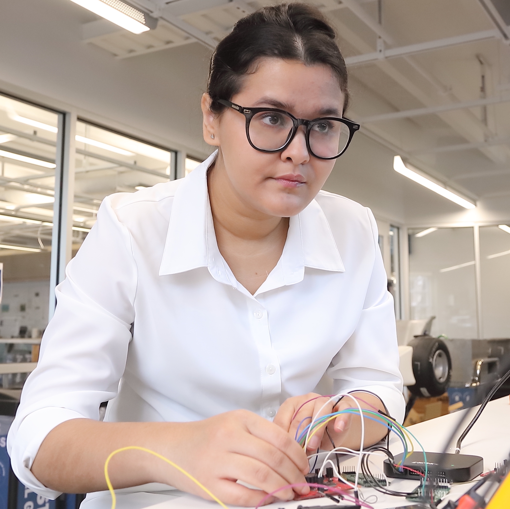
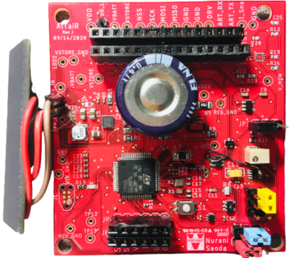
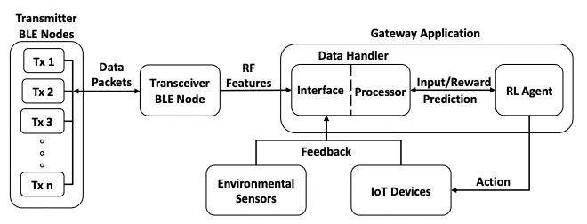
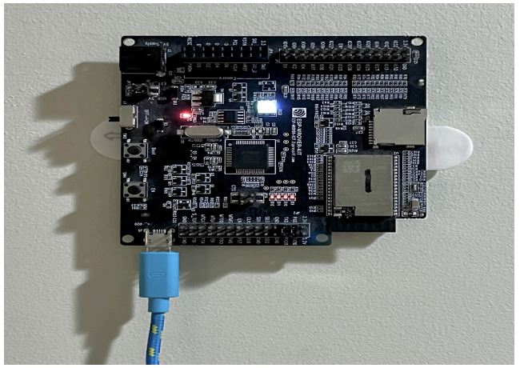

© 2023. All rights reserved.
© 2023. All rights reserved.


Current energy-harvesting systems execute applications where tasks become logically dependent on the energy state of the storage. This approach of desigining applications is monolithic and limits scalability to new applications and power supply hardware. To address these limitations, we designed Altair energy-supervisor architecture to separate energy management from the application’s main tasks. This decoupling makes energy-harvesting design easier, since now the power supply details and energy management decisions are abstracted from the applications. The energy-supervisor makes decision on behalf of the application, while ensuring different application requirements. Altair simplifies batteryless design by allowing modular and independent development of energy management and application.
Details: ALTAIR (IPSN’22)

Once deployed, commercial IoT devices can hardly be upgraded to a new functionality due to closed-source hardware and software implementation. This signifies that the availability of better hardwares and advanced features regularly forces many devices to be obsolete. In the RetroIoT project, we demonstrated a new technique to upgrade an IoT device without modifying the device’s hardware and software or desigining completely new devices. RetroIoT injects new sensor data or any metadata through the battery ports of the device and encodes the new data into the battery voltage readings transmitted by the sensor. RetroIoT’s design is simple, low energy-overhead, and only requires access to battery voltage readings.
Details: RetroIoT (MobiCom’22)

Identifying occupants in a smart space is key to many smart home control applications, yet, existing solutions have several limitations including high energy-overhead, special-purpose hardwares, and bulky installations. We proposed SolarWalk, a person identification system using small indoor photovoltaic (PV) energy harvesters that provides an ubiquituous source of power for many energy-harvesting sensors. Our observation is that the output voltage pattern of a PV cell is uniquely fluctuated when different persons walk by the cell, since the output voltage is directly proportional to the illuminance level at its surface. SolarWalk’s identification technique demonstrates a repurposable and sustainable design point by using PV cells as a sensor.
Details: SolarWalk (BuildSys’22)

Occupancy sensing engenders a wide range of automated controls with the potential of significantly curtailing building energy consumption. Traditional sensor-based systems, particularly, motion-based detection systems are notoriously inaccurate, while RF-based approaches fail to maintain accuracy over time as the physical arrangements of a space deviate. We designed robust occupancy sensing system, BLECS that retains high accuracy in dynamic spaces as well as in completely new environments, making it less susceptible to changes in physical objects over time. BLECS collects RF signal parameters from low power BLE devices to calculate the signal multipath profiles of an unoccupied room and trains a reinforcement-learning based agent to output a decision. By allowing a feedback on the action taken by the agent, BLECS adapts to a new environment never experienced before. The incorporation of commodity BLE-enabled IoT devices allows BLECS to be energy-efficient and ubiquitously deployable in most indoor infrastructures.
Details: BLECS (IPSN’21)

Location information is fundamental for a diverse array of applications and has attracted a volume of research in the area. What remains challenging is to enable large-scale location services for small IoT devices, that are often optimized to be low-cost, small in form factor, and energy-conservative. Current WiFi-based systems require bulky setups involving multiple antenna and expensive powerhungry radio chipset, which many small IoT devices do not support. Our UbiTrack system demonstrated an accurate device localization technique using small single-antenna WiFi devices that cost less than 4$. By introducing two-way association-less ranging and acquiring historical position information, UbiTrack localizes small devices in both LOS and NLOS conditions under tight energy budget.
Details: UbiTrack (BuildSys’21)
| a) Herald (2.7x4.5cm) | b) Altair (6.8x6.3cm) | c) Pascal (2x4cm) | d) Polaris (4.3x2.3cm) |
|---|---|---|---|